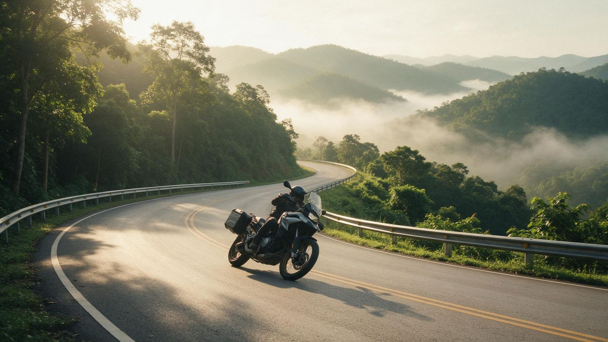
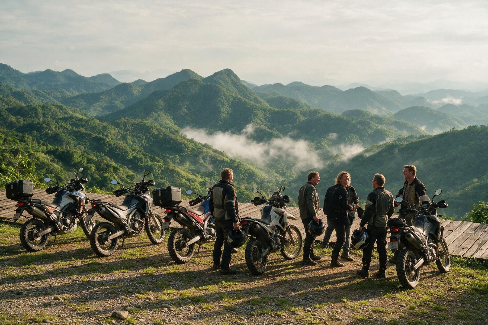
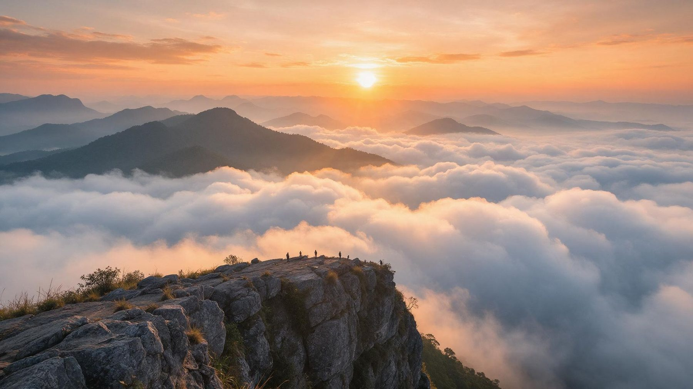
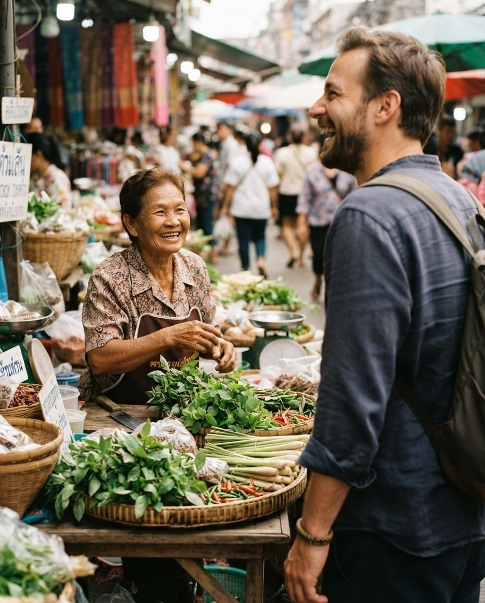
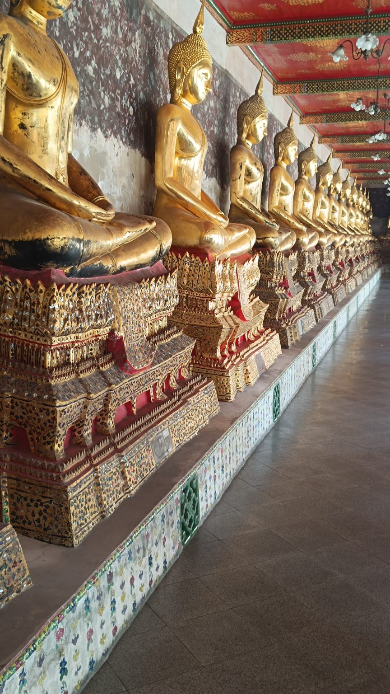
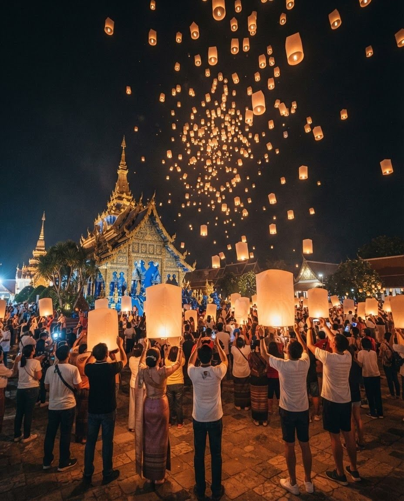
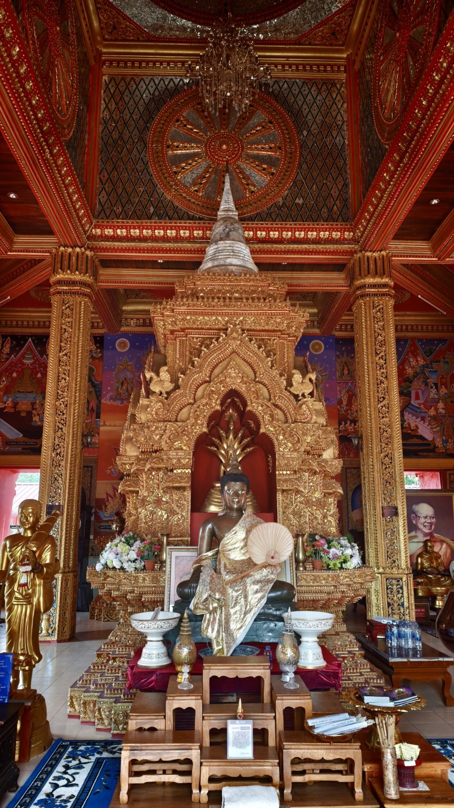
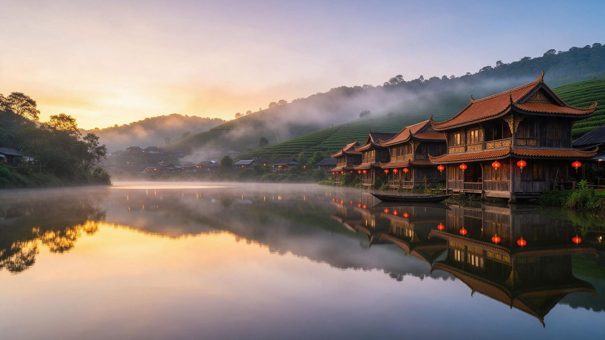
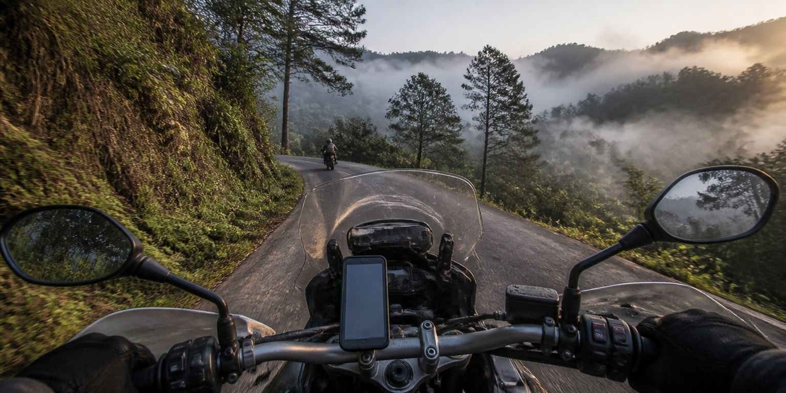

Descubre en moto la Tailandia que pocos llegan a conocer. Rodeado de plena naturaleza, mientras conoces la cultura tailandesa.
No hace falta que seas piloto de MotoGP: tan solo un mínimo de experiencia con el carnet A2 y muchas ganas de rodar y descubrir mundo.
Porque si hay algo que tienes claro es que el mundo tiene mucho por ofrecerte y no eres de quedarte sentado viendo cómo la vida pasa.
El Mae Hong Son Loop es un recorrido de unos 650 km con más de 1.800 curvas lindando con la frontera de Myanmar.
Trabajas duro en tu día a día esforzándote por dar lo mejor de ti, eres responsable en tus tareas y las llevas a cabo. Además, sabes que desconectar de la rutina y descubrir cosas nuevas te motiva.
¿Y si esta vez Tailandia fuera diferente?
No hay nada como encontrar un espacio con un ambiente agradable en el que puedes charlar tranquilamente, disfrutando, compartiendo risas y vivencias.

Mirador en el Mae Hong Son LoopDesde que empecé a viajar por el sudeste asiático mi vida ha dado un cambio muy importante. Tanto que decidí dejar un trabajo vocacional tras casi 18 años para dedicarme a acompañar a otras personas a conocer este increíble país.
El entender esta forma de vivir te hace cambiar la perspectiva y cómo ver las cosas. Descubrir una sociedad más justa y solidaria, donde la sonrisa es la principal divisa, te hace recordar que todos llevamos un niño dentro, libre y feliz.
Una mañana, tomando un café helado en Phuket, observé a un turista enfadado porque la camarera tardaba en servirle. El turista resoplaba mientras que la señora, a su ritmo, tan solo trabajaba y decía en voz baja: sabai sabai, sabai sabai…
Más tarde comprendí que sabai sabai significa estar tranquilo, recibir cada momento tal y como viene, evitando el conflicto y las tensiones innecesarias.
Para mí viajar a Tailandia es vivir una película en la que cada escena te sorprende. Cada olor a comida, flores o incienso. Cada sabor que pruebas en frutas, platos típicos con su picante, o incluso un polo de maracuyá que te regresará a la infancia. Cualquier conversación con gente local o con turistas que, como tú, están descubriendo Tailandia. Cada imagen que captures de un templo, un paisaje o la vida cotidiana de sus gentes. Todos los sonidos que percibas, desde el cantar del cuco indochino hasta los tuk tuk a escape libre en la caótica Bangkok.

Amanecer en Phu Chi Fa¿Te gustaría tener la sensación de estar viviendo todo esto a la vez?
Todos los sentidos reciben estímulos, permitiéndote estar siempre presente. El ritmo del viaje está pensado para que cada momento tenga su lugar y cada lugar tenga su momento. Vamos a realizar actividades de distintos tipos y habrá momentos de convivencia para conocernos mejor. Un equilibrio entre actividad y descanso para que puedas disfrutar en todos los aspectos. Voy a coordinar el grupo para que todo siga un orden adecuado, dejando espacio a la improvisación.

Foto de muestra. Se sustituye por el retrato real.Tengo 44 años y quiero compartir con vosotros mi pasión por Tailandia, un país que llevo visitando dos años y que ha cambiado mi vida por completo.
Los que me conocen me tachan de divertido, simpático y aventurero. Y la verdad es que no soy bueno contando chistes… ¡pero hey! Lo que sí me encanta es reír.
Mi objetivo con este proyecto es crear un espacio en el que las personas puedan descubrir la esencia de Tailandia desde una perspectiva más auténtica y local. Viajando de una manera natural y sostenible, disfrutando en un grupo homogéneo… y luego cada uno decidirá si es una experiencia transformadora, como lo ha sido para mí.
Prepara tu mochila sin pensártelo demasiado ¡y al lío!

BangkokSe aterrizará en Bangkok y visitaremos los templos más importantes de Tailandia: Palacio Real, Buda Esmeralda, Buda reclinado y Wat Arun, junto con visitas a Talat Noi, uno de los barrios más antiguos de la ciudad, rodeado de arte por todas sus esquinas. Visitaremos uno de los mejores centros comerciales del mundo (Icon Siam), el barrio chino más grande del sudeste asiático y el night market de Asiatique. Podremos disfrutar de una velada de Muay Thai en el estadio Rajadamnern. Navegaremos por el Chao Phraya y sus canales visitando el Wat Pak Nam y el Wat Saket (Monte Dorado), y probaremos la mookata o barbacoa tailandesa, entre muchos otros platos.

Yi Peng, Chiang RaiVolaremos a Chiang Rai, donde podremos vivir los festivales Yi Peng (linternas en el cielo) y Loy Krathong (ofrendas en el agua), visitando Wat Huay Pla Kang al atardecer. Probaremos la gastronomía del norte en el night market, veremos bailes regionales por las festividades y podremos relajarnos con un masaje típico tailandés. Cómo no, visitaremos el Templo Blanco, Wat Phra Kaew, Wat Phra Singh y el Templo Azul, todos ellos decorados especialmente por las fiestas. Aprovecharemos para conocer un mercado local con los productos más típicos del norte y podremos iniciarnos o perfeccionar el Muay Thai en un gimnasio.
Llegaremos a la frontera con Laos y haremos un trekking por varias cumbres, sin masificaciones. Comenzaremos con una ligera subida en Pha Bong hasta la Puerta de Siam. Seguiremos desde Phu Chi Dao con una ruta circular de unas dos horas donde veremos el atardecer. En Phu Chi Fa veremos un amanecer sobre un mar de nubes si el clima está de nuestra parte, siendo estos meses los más propicios para ello. Visitaremos el parque nacional de Phu Sang con su cascada tras la época de lluvias y la pintoresca villa de Mae Kampong antes de llegar a Chiang Mai, disfrutando de unos paisajes verdísimos durante todo el trayecto.

Chiang MaiUna vez en Chiang Mai cocinaremos nosotros mismos los platos típicos de Tailandia, visitaremos templos y tendremos tiempo para recibir masajes y disfrutar de una velada de Muay Thai.
A partir de ahora comienza el plato fuerte del viaje.
El Mae Hong Son Loop se recorrerá en seis días, visitando Mae Chaem, Khun Yuam, Ban Rak Thai, Ban Ja Bo y Pai. Combinaremos la ruta en moto con distintas actividades durante las paradas y descansos. Lo realizaremos acompañados por un guía habilitado TAT y una furgoneta de asistencia que nos trasladará las mochilas hasta los puntos señalados de la ruta.
Veremos cascadas imponentes durante un trekking, el pico más alto de Tailandia (Doi Inthanon), arrozales, campos de girasoles en las montañas, amaneceres sobre mares de nubes, puentes de bambú, cuevas, templos, navegaremos por lagos mágicos en barcas chinas… y sobre todo mucha, mucha naturaleza. Siempre dejando una parte a la improvisación, dependiendo de lo que necesite el grupo en cada momento.
El último día, ya en Chiang Mai, visitaremos elefantes en libertad en un santuario ético.

Lago de Ban Rak Thai
Seis días de curvasIVA incluido. Gastos de viaje no incluidos aparte (bloque III, unos 1.500 €).
Plaza e inscripción
Gastos de viaje sí incluidos
Gastos de viaje no incluidos
No. La ruta está diseñada para moteros con experiencia y las etapas no van a superar los 150 km diarios en ningún caso. Las carreteras se encuentran en buen estado salvo imprevistos, como puede pasar en cualquier carretera. Se va a rodar a un ritmo lento, disfrutando del entorno. Piensa que además circularás por el lado izquierdo de la calzada, ¡y en España es al revés!
Se va a proponer el uso de la Honda NX500, aunque el proveedor facilitará la opción de alquilar otras motocicletas. Estas cilindradas son las mínimas para realizar la ruta en buenas condiciones, dado que nos encontraremos pendientes prolongadas y desniveles. Por otra parte, llevar motos menos pesadas y con más maniobrabilidad hará la ruta mucho más cómoda. Habrá unas cuantas horquillas.
Voy a crear un grupo de personas que compartan las mismas aficiones, que tengan la misma perspectiva en cuanto a la forma de vivir la vida y el viaje, y sobre todo muchas ganas de pasarlo bien y conocer mundo.
Sí. Esa cantidad no está incluida en los gastos del presupuesto. Yo te facilitaré los datos de los vuelos de ida y vuelta, así como el interno, para que los puedas comprar, y resolveré cualquier duda que puedas tener al respecto.
El grupo mínimo será de 6 personas y el máximo de 8, para que la experiencia se desarrolle según los valores que se proponen.
El viaje se ha diseñado en su mayoría para habitaciones dobles con dos camas, aunque habrá lugares durante la ruta que no ofrecen más posibilidades que casas para cuatro personas. Vamos a estar en zonas donde la oferta es la que es.
Si realmente no puedes comer ninguno de los muchísimos platos que tiene la cocina tailandesa, este no va a ser tu viaje.
Muchas gracias por tu tiempo.
Cuéntame qué viaje tienes en la cabeza. Te contesto yo, normalmente en menos de 24 horas.
Quiero descubrir esta aventura